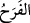

Bu ise ancak ehline keşfolunur.” denir. Hz. Ali (k.v.) şöyle demiştir:
Harf ilmi, Allâh’ın sırrıdır ki onu idrak eder
Keşf ve tahkîkin hakkını veren
“Eninde sonunda” yâni mağlub edildikleri zaman ve galip geldikleri zaman bu iki
vaktin başında ve sonunda “emir” sadece “Allâh’ındır.” Sanki şöyle buyrulmuştur:
‘Onların galip olmalarından önceki mağlup oldukları vakitte ve mağlup olduktan sonra
olan galip oldukları vakitte emir Allâh’ındır. Yâni onların önce mağlup sonra galip
olmaları durumlarının her ikisi de ancak Allâh’ın emri ve kazası iledir. “O günleri biz
insanlar arasında döndürür dururuz (zaferi bazen bir topluma bazen öteki topluma
nasip ederiz.)” (Âl-i İmrân, 3/140)
“O gün” yâni Rumlar’ın İranlılar’a galip geldiği ve Allah Teâlâ’nın vaadettiği onların
galibiyetinin meydana geldiği gün “müminler de Allâh’ın yardımıyla” yâni Allâh’ın
ehl-i kitab olanı ehl-i kitab olmayana galib kılması, Mekke kâfirlerinden kendileriyle
alay edenlerin öfkelenmesi ve bu galibiyetin mü’minlerin kâfirlere galib geleceğinin
delillerinden olması sebebiyle “sevineceklerdir.” mü’minler mutlu olacaklardır.
Râğıb der ki: “
” hemen elde edilen (dünyevî) bir lezzetle göğsün açılıp
genişlemesidir. Bu ise çoğunlukla bedenle ilgili dünyevî lezzetlerde olur. Allah bu tür
sevinmeye (ferah) ancak “De ki: Ancak Allâh’ın lütfu ve rahmetiyle, işte bunlarla
sevinsinler.” (Yûnus, 10/58) ve “O gün müminler de Allâh’ın yardımıyla
sevineceklerdir.” âyetinde ruhsat vermiştir.
Allâh’ın yardımı, hakikatte şerefli bir makam olduğundan ancak mü’minlere âiddir.
Bazıları şöyle demiştir: “Mü’minler, bazı kâfirlerin üstün gelmesine değil zâlimlerin
birbirlerini öldürmeleriyle sevinildiği gibi kâfirlerin birbirleriyle savaşıp birbirlerini
öldürmeleri sebebiyle sevinirler. Çünkü bunda onların güçlerinin kırılması ve
sayılarının azaltılması söz konusudur.
Keşfü’l-esrâr’da der ki: “Bugün üzüntü, yarın sevinç vardır. Bugün göz yaşı, yarın
neşe vardır. Bugün esef, yarın lütuf vardır. Bugün ağlama, yarın ise Hak ile buluşma
vardır.”
Her ne kadar dostlar bugün bu belâ sarayında hep dert, sıkıntı, hasret ve meşakkat
içinde olsalar da, o sıkıntı ve meşakkatin can ve gönülden alıcısıdırlar. Bildikleri ne
varsa o dert uğruna feda ederler.
Bu hususla ilgili olarak bir yol eri şöyle demiş: “Bugün öyle bir derdim var ki o derdi
yüz bin dermana değişmem.”
Dâvud (a.s.)’dan o küçücük hata çıkıp da Hak’tan ikaz gelince, hayatta kaldığı sürede
başını göğe kaldırmadı. Bir an bile tazarru ve yakarıştan vazgeçmedi. Bütün bunlara
rağmen şöyle derdi: “İlâhî, bundan daha güzel bir ilâç, bundan daha hoş bir dert
yoktur. Ey Rabbim, Bu gözyaşı ve kederden sîneme öyle bir tohum saç ki hiçbir zaman
bu dertten kurtulmayayım.”